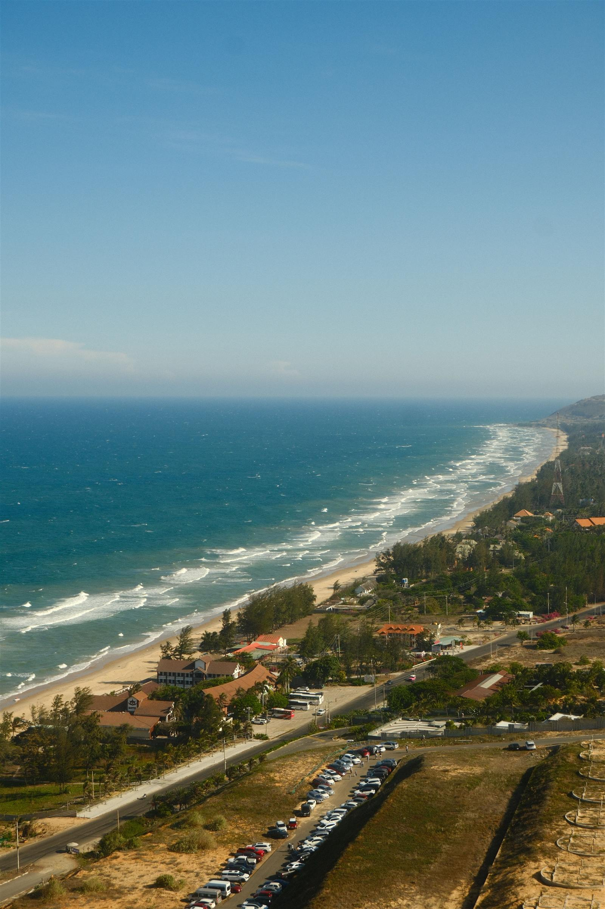

Vietnam: North to South
20 days from Hanoi's Old Quarter to the beaches of Mui Ne — Vietnam's landscapes, cultures, flavours and history, north to south.
Overview
Experience the incredible diversity of Vietnam on this unforgettable 20-day journey from north to south. Beginning among the vibrant streets of Hanoi and the emerald waters of Ha Long Bay, travel through the spectacular rice terraces of Pu Luong, explore the magnificent caves of Phong Nha, discover the imperial heritage of Hue, and wander the lantern-lit streets of Hoi An before continuing south to energetic Ho Chi Minh City, the waterways of the Mekong Delta, and the beautiful beaches of Mui Ne. Designed for travellers who want to experience Vietnam in depth, this comprehensive journey combines the country's iconic highlights with authentic local experiences and lesser-visited destinations. From north to south, this is a journey through Vietnam's landscapes, cultures, flavours and history, with time at the end to slow down and relax beside the sea.
Tour Highlights
- Explore Hanoi aboard a vintage Army Jeep/Motorbike
- Discover the secrets of Vietnam's famous coffee culture
- Cruise through the spectacular limestone islands of Ha Long Bay overnight
- Trek through the breathtaking rice terraces of Pu Luong Nature Reserve
- Visit local Thai ethnic minority communities
- Explore the magnificent caves of Phong Nha-Ke Bang National Park
- Discover Vietnam's wartime history at the Vinh Moc Tunnels and former DMZ
- Explore the Imperial City of Hue
- Drive across the spectacular Hai Van Pass
- Wander through the lantern-lit streets of Hoi An Ancient Town
- Join a hands-on Vietnamese cooking class and traditional bamboo basket boat experience
- Discover the history and energy of Ho Chi Minh City
- Explore the legendary underground network of the Cu Chi Tunnels
- Experience local life along the waterways of the Mekong Delta
- Finish your journey relaxing beside the beautiful beaches of Mui Ne
Itinerary
Day 1Welcome to Hanoi
Arrive in Vietnam's vibrant capital and settle into your hotel in the Old Quarter. Meet your guide and enjoy a welcome dinner while experiencing your first taste of authentic Vietnamese cuisine.
Day 2Discover Hanoi
Explore Hanoi aboard a vintage Army Jeep, discovering famous landmarks including Train Street, Ho Chi Minh Mausoleum, West Lake and the Old Quarter before learning the art of Vietnamese coffee during an interactive coffee workshop.
Day 3Ha Long Bay Cruise
Travel to the spectacular UNESCO World Heritage Site of Ha Long Bay and board your overnight luxury cruise. Explore hidden caves, kayak through limestone islands, enjoy swimming opportunities, and watch the sunset over one of the world's most beautiful seascapes.
Day 4Ha Long Bay to Pu Luong
Enjoy your final morning cruising through Ha Long Bay before travelling inland to the peaceful mountains of Pu Luong Nature Reserve, home to spectacular rice terraces and traditional Thai villages.
Day 5Trek Through Pu Luong
Spend the day trekking through lush valleys, picturesque rice terraces and remote villages while learning about the traditions and daily life of the local Thai ethnic minority communities.
Day 6Journey to Phong Nha
Travel south to the peaceful village of Phong Nha, surrounded by dramatic limestone mountains and the gateway to one of Asia's most impressive cave systems.
Day 7Explore Phong Nha
Visit the famous Phong Nha Cave and discover its incredible formations and fascinating wartime history. Experience the relaxed countryside lifestyle of the region with local food and time to enjoy the beautiful rural surroundings.
Day 8Paradise Cave & Commander Cave
Discover two of Vietnam's most remarkable cave systems. Explore the magnificent formations of Paradise Cave and uncover the fascinating history of Commander Cave, which served an important role during the Vietnam War.
Day 9Vietnam's Wartime History
Travel south towards Hue, stopping to explore the remarkable Vinh Moc Tunnels and learn how entire communities lived underground during the Vietnam War. Continue through the former Demilitarized Zone before arriving in the historic imperial city of Hue.
Day 10Imperial Hue
Explore the magnificent Imperial City, ancient citadel and rich heritage of Vietnam's last royal dynasty. Visit the iconic Thien Mu Pagoda overlooking the Perfume River and experience the atmosphere of the bustling Dong Ba Market.
Day 11Scenic Journey to Hoi An
Drive across the breathtaking Hai Van Pass, visit the towering Lady Buddha overlooking Da Nang and explore the Marble Mountains before arriving in the enchanting UNESCO-listed Ancient Town of Hoi An.
Day 12Explore Hoi An
Enjoy a leisurely day discovering the charming streets of Hoi An at your own pace. Explore colourful markets, historic temples, artisan shops and the famous Japanese Covered Bridge, or visit one of the town's renowned tailors before enjoying an unforgettable cultural performance.
Day 13Hoi An Cooking Experience
Visit Hoi An's colourful local market before enjoying a hands-on Vietnamese cooking class and traditional bamboo basket boat ride through the peaceful coconut forests.
Day 14Hoi An to Ho Chi Minh City
Transfer to Da Nang Airport for your flight south to Ho Chi Minh City. Arrive in Vietnam's energetic southern metropolis and settle into your hotel before enjoying your first evening in the city.
Day 15Discover Ho Chi Minh City
Explore the fascinating history and vibrant streets of Ho Chi Minh City. Visit the War Remnants Museum and Independence Palace before discovering some of the city's most famous landmarks, markets and colonial-era architecture.
Day 16Cu Chi Tunnels
Travel outside the city to explore the legendary Cu Chi Tunnels, an extraordinary underground network used during the Vietnam War. Return to Ho Chi Minh City with free time to relax or continue exploring at your own pace.
Day 17Explore the Mekong Delta
Journey into the lush waterways of the Mekong Delta and experience daily life in one of Vietnam's most fascinating regions. Visit local communities, discover the fertile landscapes of Vietnam's famous "rice bowl," and experience a slower pace of life along the river.
Day 18Ho Chi Minh City to Mui Ne
Leave the energy of Ho Chi Minh City behind and travel to the beautiful coastal town of Mui Ne. Check into your beach resort and enjoy a relaxing afternoon beside the sea after your journey through Vietnam.
Day 19Relax in Mui Ne
Enjoy a full day at leisure on Vietnam's southern coast. Relax beside the swimming pool, spend time on the beach, enjoy a spa treatment, or simply slow down and reflect on your incredible journey from north to south.
Day 20Farewell Vietnam
Enjoy one final morning beside the coast before travelling back to Ho Chi Minh City for your transfer to Tan Son Nhat International Airport and your onward journey home.
Accommodation
Inclusions & Exclusions
Included
- Vietnam Visa
- Airport arrival and departure transfers
- Boutique accommodation throughout the journey
- One-night Ha Long Bay luxury cruise
- Daily breakfast
- Selected lunches and dinners
- Private transportation
- Professional English-speaking guides
- Entrance fees and sightseeing as listed
- Hanoi Army Jeep Tour
- Vietnamese Coffee Experience
- Ha Long Bay Cruise
- Pu Luong Guided Trek
- Phong Nha Cave Tour
- Paradise Cave & Commander Cave
- Vinh Moc Tunnels & DMZ Tour
- Hue Imperial City Tour
- Hai Van Pass Scenic Drive
- Hoi An Cultural Experience
- Hoi An Cooking Class
- Bamboo Basket Boat Experience
- Ho Chi Minh City Tour
- Cu Chi Tunnels Tour
- Mekong Delta Experience
- Bottled drinking water during transfers
Not Included
- International and domestic flights (our team can recommend preferred flight numbers and departure times for seamless connections)
- Travel and medical insurance
- Drinks and personal refreshments
- Meals not specifically mentioned
- Optional activities
- Personal expenses
- Laundry and minibar charges
- Tips and gratuities
- Early check-in or late check-out
- Services not listed under Inclusions
Travel Notes
- Best travel season: February to April and October to November for the best overall balance of weather across Northern, Central and Southern Vietnam
- Comfortable walking shoes are recommended for sightseeing and trekking
- Modest clothing covering shoulders and knees is recommended when visiting temples, pagodas and religious sites
- Vietnam uses the Vietnamese Dong (VND) — carrying some cash is recommended, particularly in rural areas
- Travel insurance is compulsory
- This itinerary includes a combination of cultural sightseeing, scenic walks, light trekking and longer travel days, suitable for most travellers with a moderate level of fitness
Flexible Travel
This itinerary has been carefully designed to showcase the very best of Vietnam but can be fully customised to suit your interests, travel style, accommodation preferences, budget and available travel time. Whether you'd like to extend your stay, upgrade your accommodation, add additional destinations or enjoy more leisure time, our team will create a personalised journey that's perfect for you.